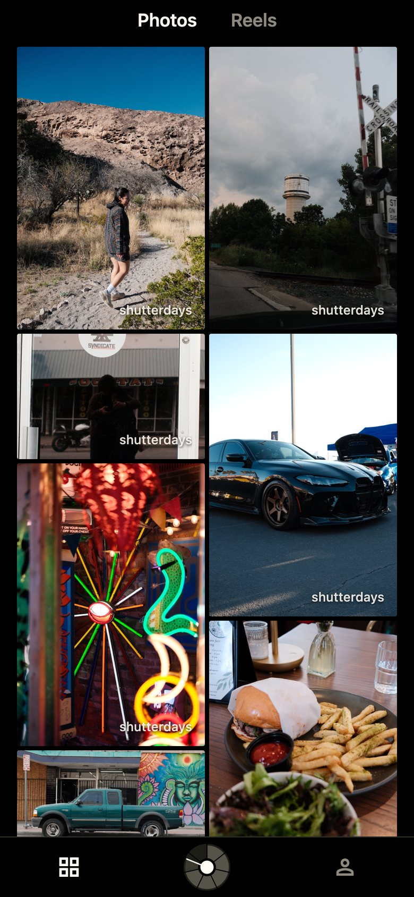
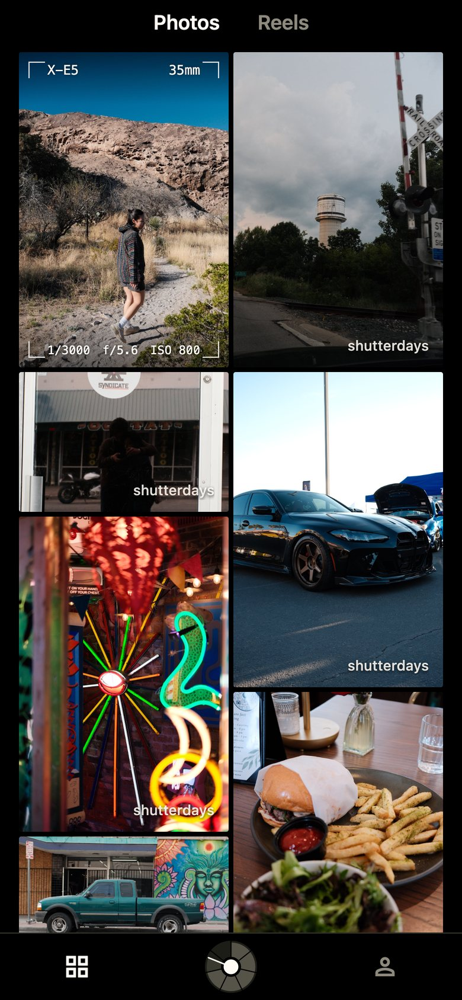
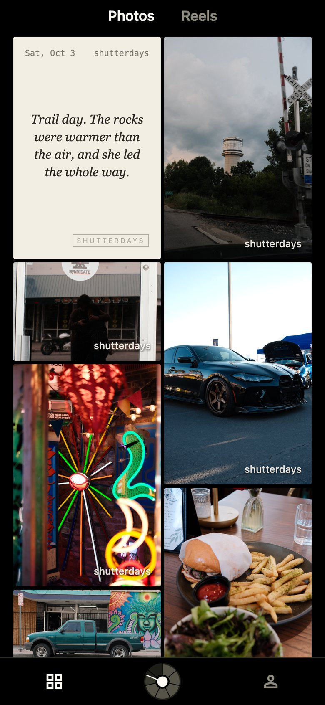
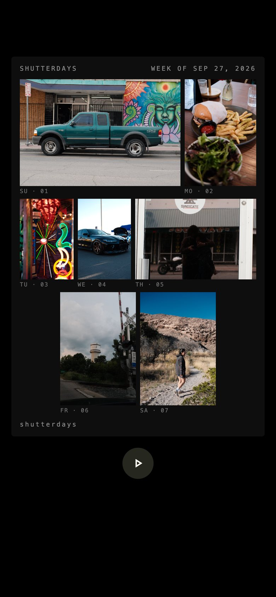
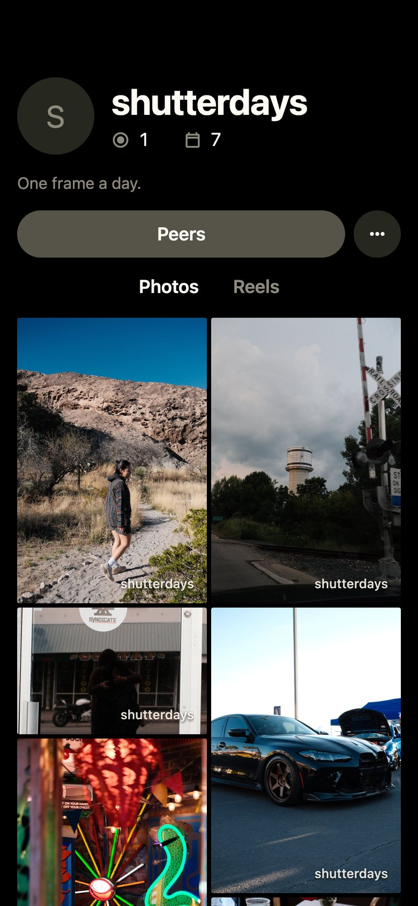

Shutterdays
One frame a day.
Shutterdays is a photo journal for still photos only. Post one photo a day, Sunday to Saturday. A desk, a coffee, a run, a storm rolling in: every frame counts the same. Finish all seven and your week develops into a reel.
In testing with a small groupHow it works
Photos always show at their true shape, never cropped. Everything else is one gesture away.





What we won't do
- No video and no endless short-form feed. Still photos only.
- No follower counts. Not on your profile, not on anyone's.
- No public likes. Double-tap gives an award; only the photo's owner sees how many.
- No engagement ranking. The feed is people you know first, newest first.
- No punishment. Miss a day and that week's reel doesn't develop, but your photos stay.
- No location. GPS is removed from every photo before it leaves your phone.
Support
Questions, problems or feedback from testing: email hernandezj@shutterdaysdev.tech. You can delete your account at any time in the app under Settings.